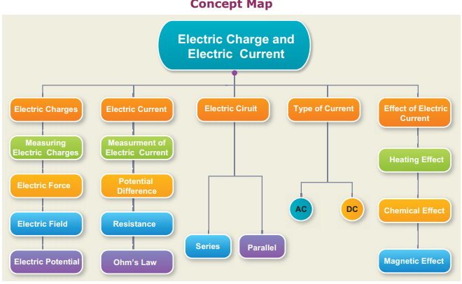
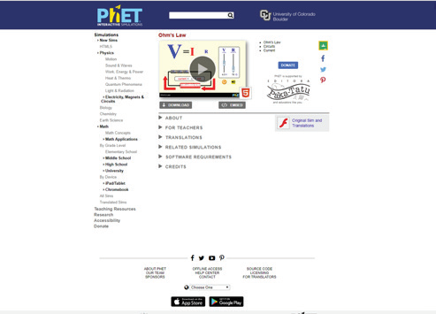
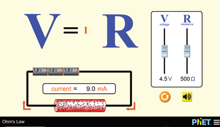
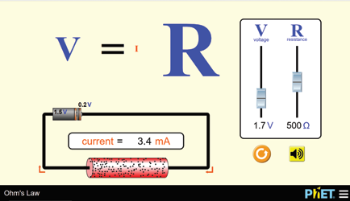
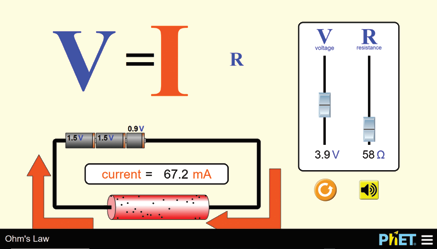
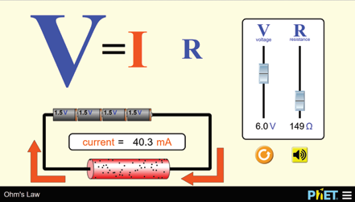

1 In current electricity, a positive charge refers to,
a bracket closed presence of electron
b bracket closed presence of proton
c bracket closed absence of electron d bracket closed absence of proton
2. Rubbing of comb with hair
a bracket closed creates electric charge
b bracket closed transfers electric charge
c bracket closed either Bracket OPEN a bracket closed or Bracket OPEN b bracket closed
d bracket closed neither Bracket OPEN a bracket closed nor Bracket OPEN b bracket closed
3. Electric field lines dash from positive charge and dash in negative charge.
a bracket closed start semicolon start b bracket closed start semicolon end c bracket closed end colon start
d bracket closed end semicolon end
4. Potential near a charge is the measure of its to bring a positive charge at that point.
a bracket closed force
b bracket closed ability
c bracket closed tendency
d bracket closed work
5. Heating effect of current is called,
a bracket closed Joule heating
b bracket closed Coulomb heating
c bracket closed Voltage heating
d bracket closed Ampere heating
6. In an electrolyte the current is due to the flow of
a bracket closed electrons
b bracket closed positive ions
c bracket open both a and b
d bracket closed neither bracket open a. bracket closed nor Bracket open b bracket closed
7. Electroplating is an example for
a bracket closed heating effect
b bracket closed chemical effect
c bracket closed flowing effect
d bracket closed magnetic effect
8. Resistance of a wire depends on
a bracket closed temperature
b bracket closed geometry
c bracket closed nature of material
d bracket closed all the above
1. Electric charge
Bracket OPEN a bracket closed ohm
2. Potential difference Bracket OPEN b bracket closed ampere
3. Electric field Bracket OPEN c bracket closed coulomb
4. Resistance Bracket OPEN d bracket closed newton per coulomb
5. Electric current Bracket OPEN e bracket closed volt
1. Electrically neutral means it is either zero or equal positive and negative charges.
2. Ammeter is connected in parallel in any electric circuit.
3. The anode in electrolyte is negative.
4. Current can produce magnetic field.
1. Electrons move from dash potential to dash potential.
2. The direction opposite to the movement of electron is called dash current.
3. The e m f of a cell is analogues to dash of a pipe line.
4. The domestic electricity in India is an ac with a frequency of dash Hz.
1. A bird sitting on a high power electric line is still safe. How question mark
2. Does a solar cell always maintain the potential across its terminals constant question mark Discuss.
3. Can electroplating be possible with alternating current question mark
1. On what factors does the electrostatic force between two charges depend question mark
2. What are electric lines of force question mark
3. Define electric field.
4. Define electric current and give its unit.
5. State Ohm’s law.
6. Name any two appliances which work under the principle of heating effect of current.
7. How are the home appliances connected in general, in series or parallel. Give reasons.
8. List the safety features while handling electricity.
1. Rubbing a comb on hair makes the comb get minus 0.4C.
Bracket OPEN a bracket closed Find which material has lost electron and which one gained it.
Bracket OPEN b bracket closed Find how many electrons are transferred in this process.
2. Calculate the amount of charge that would flow in 2 hours through an element of an electric bulb drawing a current of 2.5 A.
3. The values of current Bracket OPEN I bracket closed flowing through a resistor for various potential differences V across the resistor are given below. What is the value of resistor question mark
I Bracket OPEN ampere bracket closed |
0.5 |
1.0 |
2.0 |
3.0 |
4.0 |
V Bracket OPEN volt bracket closed |
1.6 |
3.4 |
6.7 |
10.2 |
13.2 |
Bracket OPEN Hint colon plot V-I a graph and take slope bracket closed
Fundamentals of Physics K.L Gomber and K. L.Gogia
Concepts of Physics H.C Verma
General Physics W.L. White ley
http://www.qrg.northwestern.edu/projects/vss/
docs/propulsion/1-what-is-an-ion.html
https://www.explainthatstuff.com/batteries.html
https://www.woodies.ie/tips-n-advice/how the-fuse box-works-in-the-home-new
concept map image was given below

Ohm's Law Verification
This activity enables to learn the relationship between current and potential difference

Step 1
Type the URL link given below in the browser OR scan the QR code.
You can vary the value of V and R to know the change the current flowing across the conductor
On the right you can do the changes in V and R to learn the variations.




Browse in the link: